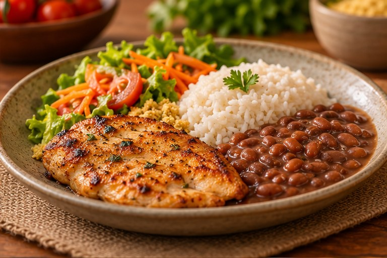
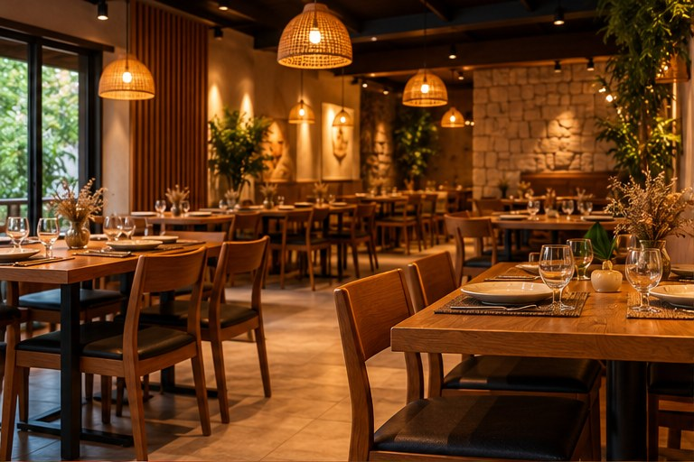
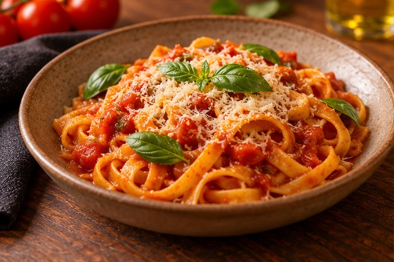
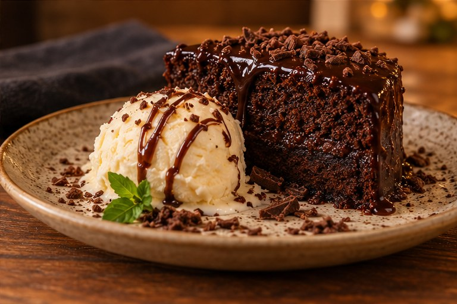
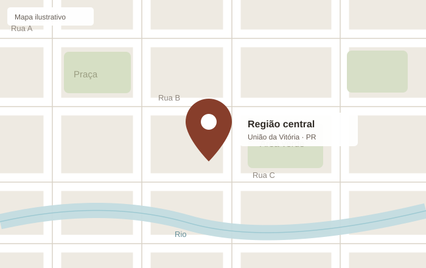

Pratos da casa
Refeições completas, com acompanhamentos e opções que mudam durante a semana.
Almoço e jantar
União da Vitória, PR

BEM-VINDO A CASA DO FORNO
Aqui você encontra comida caseira, massas e sobremesas para aproveitar uma boa refeição, seja no almoço ou no jantar.
Nosso cardápio reúne receitas conhecidas e pratos preparados com cuidado. Tudo isso em um ambiente tranquilo, para reunir a família e os amigos.
Conheça nosso cardápio →NOSSA COZINHA
Do almoço de todo dia à sobremesa do fim de semana.

Refeições completas, com acompanhamentos e opções que mudam durante a semana.

Receitas com molhos tradicionais, feitas para quem gosta de uma boa massa.

Doces para encerrar a refeição, incluindo os clássicos que todo mundo gosta.
ESPERAMOS VOCÊ
Confira o endereço e escolha um bom momento para nos visitar.
Veja como chegarVENHA NOS VISITAR
Informações para você planejar sua visita.

Rua das Araucárias, 120
Centro - União da Vitória / PR
Segunda a sábado
11h às 14h e 18h às 22h
TIRE SUAS DÚVIDAS
Não é necessário, mas para grupos maiores recomendamos combinar a visita com antecedência.
Sim. A disponibilidade pode variar conforme o cardápio do dia.
Algumas opções podem ser preparadas para retirada, de acordo com a disponibilidade da cozinha.
Sim. Além dos pratos tradicionais, temos opções diferentes ao longo da semana.